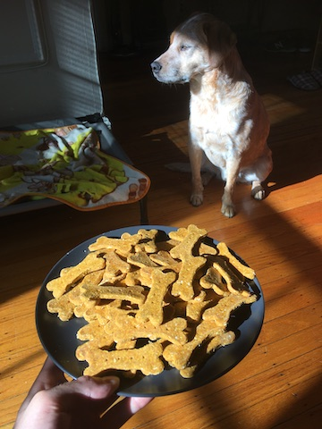

Mars Barz

This is Mars in a show of self-restraint when being offered a full plate of his favorite treats.
Description
Delicious treats your pup will devour. These treats are super easy to make and this recipe yields a ton of them. These treats are all natural, so it's recommended to keep them fresh in the refrigerator or in the freezer for long-term storage.
Ingredients
- 2 cups ground rolled oats
- 3.5 cups of flour
- 1 15oz can of pumpkin puree
- 6 tbsp of smooth peanut butter
- 2 eggs
- 1/2 cup applesauce
- 1 tsp cinnamon
Steps
- Preheat oven to 350˚
- Mix pumpkin, peanut butter, eggs, applesauce and cinnamon in a large bowl
- Slowly add ground rolled oats, flour, and combine together with hands until a consistent dough forms (it should not be too sticky)
- Lightly flour your counter space, roll out dough to about 1/8-1/4 inch thickness, cut treats into desired shape, and place together on a baking sheet
- Bake for 15 min, flip treats, and bake for another 15 min (up the time if you want a crunchier treat!)
- Let cool for 30 min, and treat your pup!